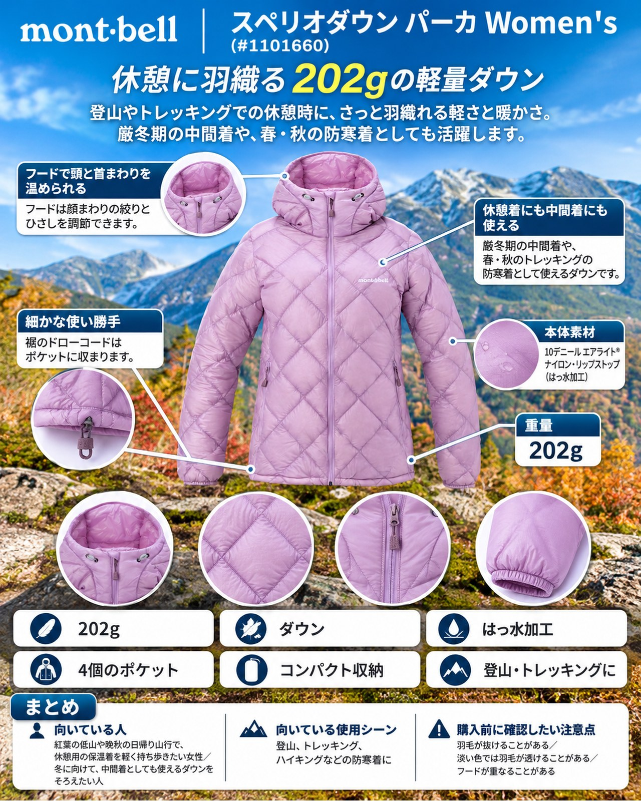

11月中旬に入り、都心でも最低気温が7℃前後まで下がる日が出てきました。今週は11〜13日に晴れが続き、紅葉が見頃を迎えた低山へ出かけるには良いタイミングです。ただ晴れていても朝夕や山頂の休憩では体が冷えやすく、日中との寒暖差も大きい時期。ザックに1枚入れておく保温着がほしくなります。そこで紹介するのが、モンベルの「スペリオダウン パーカ Women's」（品番 #1101660）です。800フィルパワー・EXダウンを10デニールの軽量ナイロンで包んだ、平均重量202gのフード付きダウン。紅葉の低山や晩秋の日帰り山行で、休憩や朝夕に羽織る1枚を手頃な価格でそろえたい女性に向きます。
基本スペック
※仕様・価格は2026年11月12日時点のモンベルの商品ページの表示です。
| 項目 | 内容 |
|---|---|
| 商品名 | スペリオダウン パーカ Women's |
| 品番 | #1101660 |
| 平均重量 | 202g |
| 収納サイズ | Φ11×19cm（1.9L） |
| 素材 | 10デニール エアライト®ナイロン・リップストップ（はっ水加工） |
| 保温材 | 800フィルパワー・EXダウン |
| ポケット | 4個（ジッパー付き：腰2、ジッパーなし：内2） |
| カラー | ブルーグリーン、アイボリー、ラベンダー、ネイビー |
| サイズ | XS、S、M、L、XL、M-R・L-R（ゆったり幅） |
| 価格 | 21,200円（税込） |
1.9Lに収まる収納サイズ
付属のスタッフバッグに入れると1.9Lの小ささです。平均重量は202gで、収納サイズはΦ11×19cm。日帰りの小さなザックでも場所を取りにくく、「使うかわからないけれど念のため」という保温着として持ち歩きやすいサイズ感です。800フィルパワー・EXダウンと超軽量シェル素材の組み合わせで、保温性と軽さの両立をねらった作りです。
フードで頭と首まわりを温められる
フードは顔まわりの絞りとひさしを調節できます。「デュアルアクスルフード」と呼ばれる仕様で、ひさしは後頭部のベルクロで調節します。頭や首まわりを保温しやすく、冷たい風が当たる山頂での休憩に心強い装備です。
休憩着にも中間着にも使える
厳冬期の中間着や、春・秋のトレッキングの防寒着として使えるダウンです。アウターとしてもインナーとしても着られる設計なので、寒暖差の大きいこの時期は、登りでは脱いでおき、山頂や下山後の休憩で羽織る使い方が合います。
細かな使い勝手
裾のドローコードはポケットに収まります。余ったコードが裾から垂れず、フロントはジッパーがあごに当たらない仕様で、内側には小物を入れられるポケットが2つあります。表地には帯電防止加工があり、乾燥した季節の静電気を軽減するとされています。身幅にゆとりを持たせたM-R・L-Rのリラックスサイズもあり、着丈はそのままで中に厚手のフリースを着込みたい人も選びやすくなっています。
デメリット・注意点
- 羽毛が抜けることがある：軽量化のため薄手の生地を使っており、着用中の伸縮などで生地やステッチから羽毛が抜け出すことがあります。ザックのショルダーベルトとの擦れや、枝への引っかけにも気をつけたいところです。
- 淡い色では羽毛が透けることがある：淡い色の表地では濃色の羽毛が透けて見える場合があります。アイボリーやラベンダーを選ぶ場合は理解しておきましょう。
- フードが重なることがある：他のウエアにもフードがついていると、重なりがやや気になることがあります。フード付きのレインウェアやシェルを上に重ねるときは、収まり方を試着で確認しておくと安心です。
- 雨には別にレインウェアが必要：表地ははっ水加工のナイロンです。今週末の14〜15日のように雨の予報が出ている日は、レインウェアと組み合わせる前提で考えましょう。
- 洗濯に手間がかかる：ダウン専用洗剤と洗濯ネットの使用が求められています。
向いている人・向いていない人
◎向いている人
- 紅葉の低山や晩秋の日帰り山行で、休憩用の保温着を軽く持ち歩きたい女性
- 冬に向けて、中間着としても使えるダウンをそろえたい人
- 中に厚手の服を着込みたく、身幅にゆとりのあるサイズを選びたい人
△向いていない人
- 雨や湿雪の中でレインウェアなしで着たい人
- 枝や岩に擦れやすいルートで、行動中も着続けたい人
まとめ
モンベルの「スペリオダウン パーカ Women's」は、800フィルパワー・EXダウンを使った平均重量202g、収納時1.9Lの軽量ダウンパーカです。フードで頭まわりまで温められ、休憩着としても冬の中間着としても使えるのが魅力。薄手の生地による羽毛抜けや、雨には別にレインウェアが必要な点を理解したうえで、冷え込みが増す晩秋の山行のお供に検討してみてください。
この記事で紹介した商品
価格・重量・在庫は各ブランド公式サイトの記載（確認日つき）にもとづきます。商品を押すと、購入先を選べます。
この記事にはアフィリエイト広告が含まれます。リンク先での購入により、当サイトが報酬を受け取る場合があります。山行の前には、最新の気象とルートの状況を必ずご確認ください。